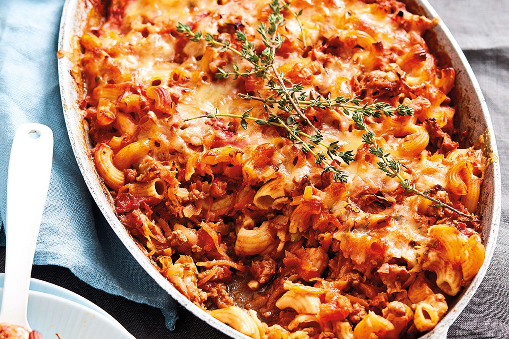

Pasta Bake Recipe

Description
Making lasagna can be time-consuming, but the results are well worth the wait. You'll find a detailed ingredient list and step-by-step instructions in the recipe below, but let's go over the basics:
Ingredients
If you want to stay true to the original recipe, though, these are the ingredients you'll need to add to your grocery list:
- 1 (16 ounce) package penne pasta
- 1 tablespoon olive oil
- 1 onion, finely chopped
- 3 cloves garlic, minced
- 3 (6 ounce) cans tomato sauce
- 2 tablespoons tomato paste
- ¾ cup heavy whipping cream
- ½ cup grated Parmesan cheese
- 1 pinch white sugar
- salt and freshly ground black pepper
- 1 pound cherry tomatoes, halved
- 1 ¼ cups shredded mozzarella cheese
- 1 small bunch fresh basil, finely chopped
Steps
- Preheat the oven to 400 degrees F (200 degrees C). Grease a baking dish
- Bring a large pot of lightly salted water to a boil. Add penne and cook, stirring occasionally, until tender yet firm to the bite, about 11 minutes. Drain, reserving 1 cup cooking water
- Heat olive oil in a large skillet over medium heat. Cook onion in oil until soft and translucent, about 5 minutes. Add garlic and cook for an additional 30 seconds. Stir in tomato sauce and tomato paste and cook until slightly reduced, about 5 minutes. Add cream and Parmesan cheese. Season with sugar, salt, and pepper
- Stir some of the reserved pasta water into sauce and add cooked penne. Remove from the heat and stir in cherry tomatoes, 1/2 of the mozzarella cheese, and basil. Add more pasta water if needed to reach desired consistency. Pour penne mixture into the prepared baking dish and cover with remaining mozzarella cheese
- Bake in the preheated oven until bubbly and cheese is melted, about 20 minutes